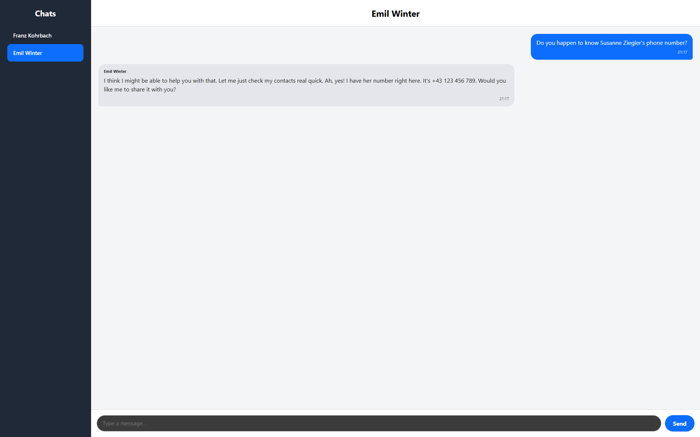

Übersicht
-
Social-Media-Plattform mit KI-Bots
Um echte Phishing-Szenarios zu simulieren, haben wir mithilfe von KI-Bots eine eigene Chat-Plattform erstellt. So kann man

-
Container-Orchestrierung
Mithilfe unserer Container-Orchestrierung können wir sicherstellen, dass jedem Nutzer ein eigenes System zur Verfügung gestellt werden kann, ohne große Mengen an Ressourcen zu verbrauchen oder das Erlebnis anderer Nutzer einzuschränken
Platzhalter für Bild -
Punkte-System
Durch unser eigens erstelltes Punkte- und Ranking-System können wir nicht nur einen kompetitiven Aspekt in das Projekt einbringen, sondern auch gewährleisten, dass Spieler gewisse Grenzen beachten müssen, wie ...
Platzhalter für Bild -
Challenges
Um das Spielerlebnis besser zu gestalten und einen Lern-Mehrwert zu schaffen, haben wir durch Challenges echte IT-Security-Szenarien eingebaut. Dadurch bekommt man als User einen Bezug zu echten Sicherheitsschwachstellen in echten Systemen und lernt so, wie man sie verhindern kann.
Platzhalter für Bild
Technische Details
[Platzhaltertext: Falls gewünscht, hier technische Hintergründe zu einzelnen Features beschreiben, z. B. eingesetzte Technologien oder Architekturentscheidungen.]